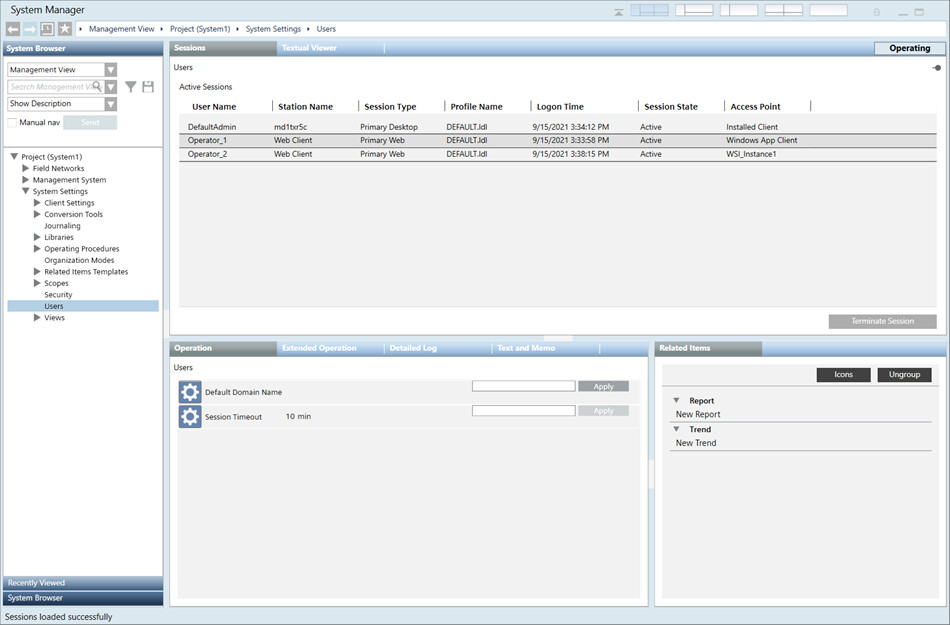

User and User Group Administration
This section provides background information on active user sessions, session timeout, single sign-on token lifetime, and domain name for logon. For related procedures, see the step-by-step section.

- Active Sessions: Displays information about the active users, that are currently logged in to Desigo CC. It also displays a list of all the active sessions (for example, Primary Desktop session, Primary Web session etc.). These sessions are ended by the Administrator.
- User Name: Displays the name of the user, used to login to Desigo CC.
- Station Name: Displays the name of the Management Station, for example (host name of Primary Desktop etc.).
- Session Type: Displays the type of session (for example, Primary Desktop, Primary Web etc.).
- Profile Name: Displays active users profile name.
- Logon Time: Displays the start time of a session.
- Session State: Displays the state (for example, Active ) of the session.
- Access Point: Displays the client in use by the user. For example: Installed Client, Windows App Client. If the client entry point is via the WSI, the Instance Name (Instance Number) displays. For example: Default Instance (77)
NOTE: The WSI Instance Name and Instance Number can be found in the System Manager Console (SMC), under the project’s Web Services Settings. - Terminate Session: Allows you to terminate any existing active session.
- Default Domain Name: Displays the domain name of a logged in session. You can also specify the domain name by entering the name in the text box, in the Extended Operation tab, of the Contextual pane.
- Session Timeout: Allows you to specify the time period (i.e. in minutes), after which the session gets ended.
- Single Sign-On Token Lifetime: Displays the time period for which the SSO token is valid. You can also specify the time period from minimum 1 minute to maximum 10 minutes.